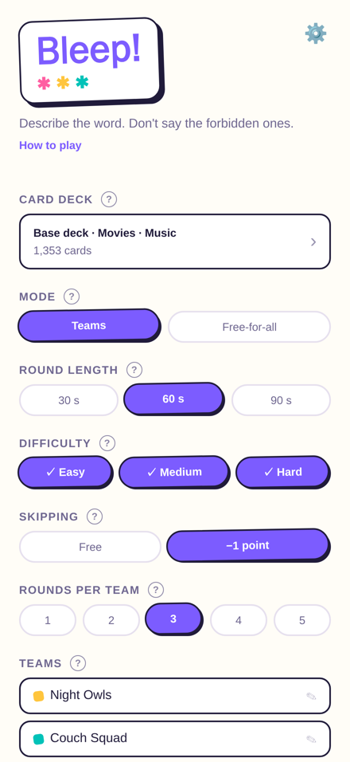
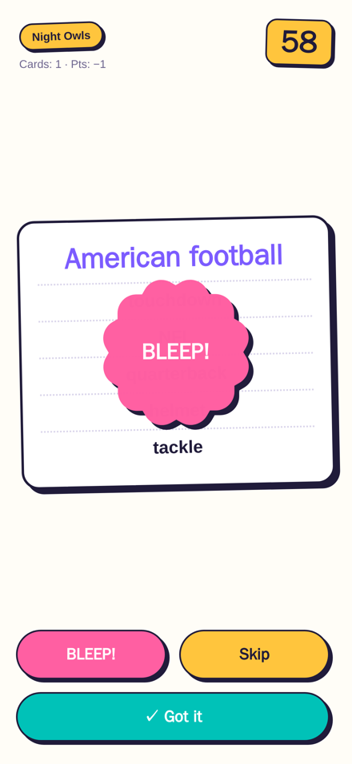

Describe the word. Don't say the forbidden ones.
Describe the word without saying the forbidden ones. Party game in 18 languages.


Now in 18 languages, every deck written natively. Pick Easy, Medium or Hard cards, write your own, and share the final scoreboard with the group.
How to play
Play in teams (2–4) or free-for-all, everyone for themselves.
One player is the clue giver: get the others to say the word at the top of the card — without ever saying it yourself. The five words under it are forbidden too, parts and forms included.
In teams, the clue giver's teammates guess while the other team listens for forbidden words. In free-for-all, everyone guesses and everyone listens. A forbidden word slips out? Yell BLEEP! and tap the red button: −1 point.
✓ Got it = +1 point, skip = 0 or −1 (your choice at setup), and cards keep coming until time runs out. Fix any wrong taps on the round summary. Highest total wins.
Describe the word at the top of the card without saying the five forbidden words under it. Your team guesses, the other team listens. When a forbidden word slips out, they slam the big BLEEP button.
Pass one phone around, play in teams or free-for-all, and let the timer do the trash talk.
Bleep! is a charades-style word guessing game made for game night. Loud at a party, fun with the family. Fully offline, so it works on the plane, at the cabin, anywhere.
HOW IT PLAYS
- One player gives clues, teammates shout guesses
- Five forbidden words per card, and no parts or forms of them either
- BLEEP! costs a point. Skipping is up to your house rules
- Fix mistagged cards after each round, so nobody argues with the phone
- Highest total after all rounds wins
WHAT'S INSIDE
- 1,000+ free cards in every language
- 18 full decks: English, Polski, Deutsch, Español, Français, Italiano, Nederlands, Português, Türkçe, Svenska, Norsk, Dansk, Suomi, Čeština, Magyar, Română, Ελληνικά, Українська
- Every deck written natively for its language, not translated
- Easy, Medium and Hard cards: play one level or mix them
- My cards: write your own cards and inside jokes, free
- Themed packs: Movies, Music, Food, Sports, Animals, Travel, Idioms, Classic, American High School, Retro, Very British and Straya
- Teams (2–4) or free-for-all (2–8 players)
- 30/60/90-second rounds, optional skip penalty
- Share the final scoreboard as a picture, and keep your stats across games
- Works completely offline, nothing to download
- No ads, no account, no tracking. Just the game
- iPhone and iPad
One purchase unlocks a pack in every language it exists in, or unlock everything at once.
Grab your friends. Mind your words. BLEEP!